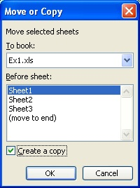
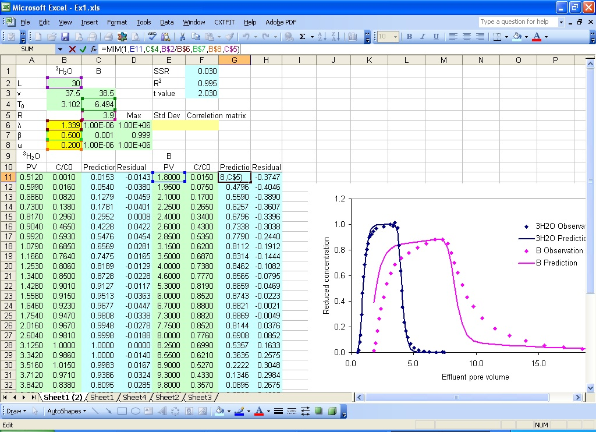
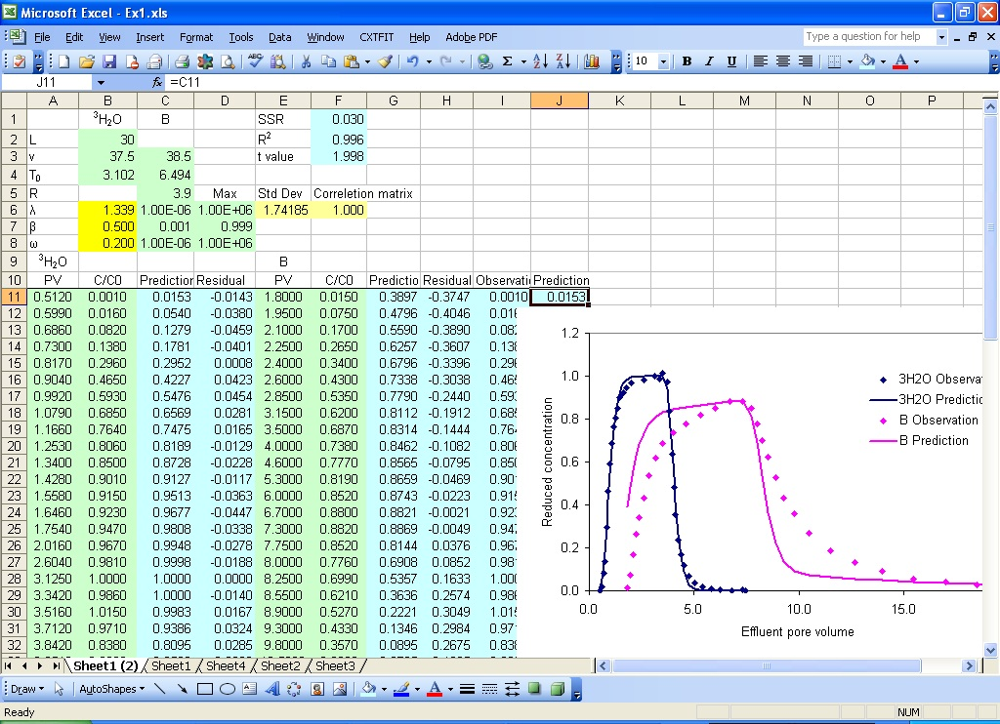
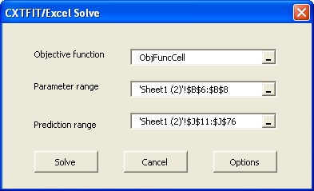
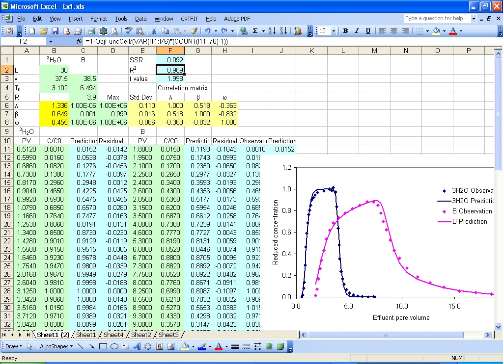

Section 3: Simultaneous Fit of Two Tracers
We build on Section 2, add B data and fit the two tracers simultaneously.- Make a copy of Sheet1 to add B data
- Input parameters, observations, and formula for model prediction and residual (Fig. 3.2)
- Arrange the prediction range and update the objective function
- Solve the problem
- Update statistics
Select menu Edit->Move or Copy sheet... to open the Move or Copy dialog (Fig. 3.1). Select Sheet1, check Create a copy, and click OK to copy Sheet1 to Sheet2 (2).

Fig. 3.1 Move or Copy dialog
In the new sheet (Sheet1 (2)), perform the same actions from Step 2 and Step 3 in Section 2.
Fill in C3:C5 with experiment condition, B7:B8 for the additional parameters to be estimated, and E11:F40 for B observation times and concentrations.
Type in the formula =MIM(1.0, E11, C$4, B$2/B$6, B$7, B$8, C$5) in cell G11 and double click the right bottom corner of cell G11 to extend the formula for all of the B prediction. The arguments are 1.0 for relative distance from inlet, E11 for dimensionless time, C$4 for dimensionless pulse volume, B$2/B$6 is the Peclet number (=L/lambda), B$7 is the fraction, B$8 is the mass transfer coefficient, and C$5 is the retardation factor.

Fig. 3.2 Add parameters, observations, and formula for predictions and residual for B
Type in =F11-G11 in cell H11 and double click the right bottom corner of the cell to extend the formula for residual calculation.
To create a continuous range including predictions for both 3H2O and B, type in the formula =C11 in cell J11, and extend the formula to J46; type in the formula =G11 in cell J47 and extend the formula to J76 (Fig. 3.3).
Similarly, put observations for 3H2O and B in I11 to I76. In cell F1, add +SUMSQ(H11:H40) to the existing formula to include residuals for B.

Fig. 3.3 Update the objective function and arrange the prediction range
Select menu CXTFIT->Solve to open the Solve dialog, this dialog should be similar to Fig. 2.10. Because the three local names are defined in Sheet1 and kept in the new sheet when it is copied from Sheet1, you will have to select the new parameter range and prediction range (Fig. 3.4), click Solve to solve the problem. The results are shown in Fig. 3.5 with the update of parameter estimate in B6:B8, standard deviation and correlation in E6:H8. Note that the standard deviations and correlations are relatively small while the model describes the breakthrough curves reasonably well.

Fig. 3.4 Solve dialog
Because the parameter and prediction ranges changed from the case in Section 2, we need to update the formula for statistics (e.g., R square, confidence intervals).
To update the formula in cell F2 for R square calculation, change the formula to =1-F1/(VAR(I11:I76)*(COUNT(I11:I76)-1)).

Fig. 3.5 Parameter estimation results